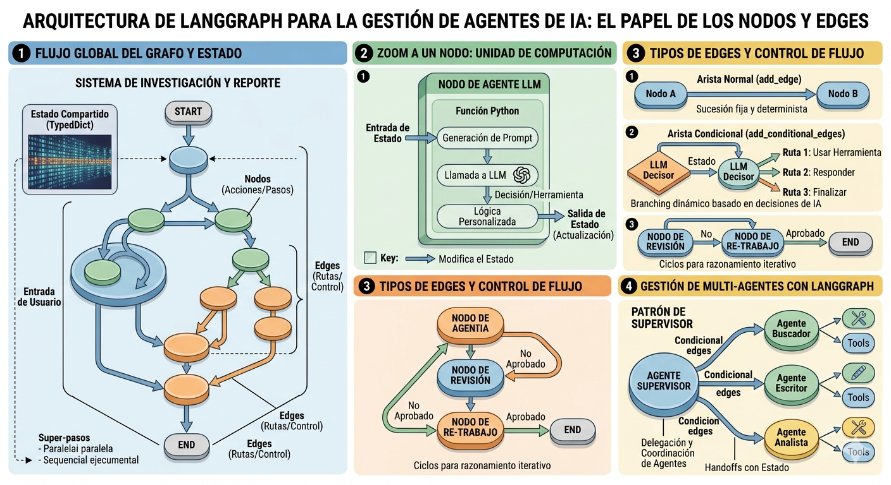
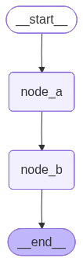
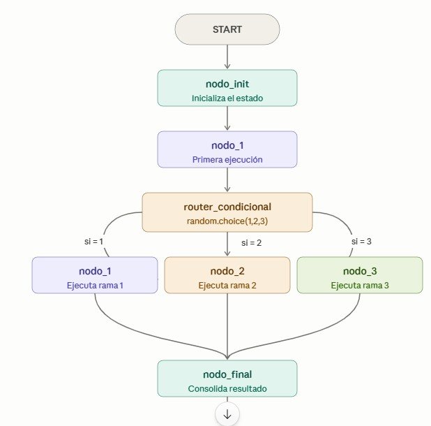
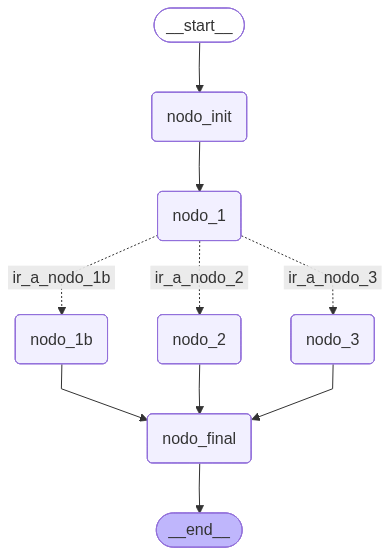

9. Introducción#
Las llamadas LLM simples están limitadas por el conocimiento con el que se entrenó el modelo. Para solucionar esto, los desarrolladores usan cadenas o sistemas de agentes para otorgar a los LLM mayor control sobre los flujos de trabajo de la aplicación.
9.1. ¿Por qué LangGraph?.#
Dar más control a un LLM reduce la confiabilidad , pero LangGraph ayuda a mantener la confiabilidad al tiempo que permite un comportamiento agente .
• Más flexibilidad en el diseño de flujos de trabajo.
• Visibilidad clara del flujo de control (sin indicaciones complejas ocultas).
• Admite ciclos y persistencia , lo que lo hace adecuado para flujos de trabajo de IA iterativos
9.2. Grafos en LangGraph#
LangGraph estructura los flujos de trabajo como grafos con nodos y bordes :
• Nodos : funciones de Python que definen la lógica del agente .
• Bordes : funciones de Python que deciden qué nodo se ejecuta a continuación en función del estado.

9.3. Workflow agéntico con LangGraph#
Los flujos de trabajo agentísticos permiten a los LLM controlar el flujo de ejecución , adaptándose a la entrada, las condiciones y las herramientas del usuario . A diferencia de las cadenas fijas, los flujos de trabajo agentísticos toman decisiones en tiempo real , lo que mejora la flexibilidad y la automatización.
9.4. Gestión de estados en LangGraph#
LangGraph utiliza un estado estructurado para mantener la coherencia de los datos del agente a medida que avanzan en un flujo de trabajo. Para un agente de atención al cliente, este estado puede incluir el historial de conversaciones, las preferencias del usuario, las decisiones de enrutamiento (departamento) y las tareas pendientes. A medida que los nodos procesan la información, el estado se actualiza y se transmite, lo que permite un comportamiento del agente modular y fácil de mantener.
Estos estados se consiguen mediante la creación de clases que heredan bien de TypeDict, de Pydantic, o de messagesState.
Dos opciones de esquema definen este estado:
• TypedDict para velocidad y simplicidad con tipos nativos de Python.
• Pydantic para validación en tiempo de ejecución y modelos más enriquecidos, útil cuando se requiere integridad estricta de los datos.
Las actualizaciones de estado se controlan mediante reductores (reducers). De forma predeterminada, las actualizaciones sobrescriben los valores, pero los reductores permiten comportamientos personalizados, como la adición de listas. Cada campo del estado actúa como un canal independiente, de modo que los nodos pueden leer y escribir fragmentos específicos de forma independiente (p. ej., solo mensajes o solo departamento). LangGraph también admite patrones avanzados, como objetos de comando para actualizaciones complejas, bordes condicionales para el enrutamiento según el estado y persistencia/puntos de control para pausar, reanudar o depurar mediante viajes en el tiempo.
9.5. Códigos y ejemplos#
Ejemplo de TypedDict para el estado de un agente:
class AgentState(TypedDict):
messages: list[str]
user_preferences: dict
department: str
pending_tasks: list[str]
Ejemplo de reductor para agregar mensajes en lugar de sobrescribirlos:
from typing import Annotated, TypedDict
from operator import add
class State(TypedDict):
messages: Annotated[list[str], add] # Añade nuevos mensaje
department: str # sobre escribe por defecto
Notas:
• Sin un reductor, las actualizaciones sobrescriben el valor existente.
• Con Annotated y operator.add, las actualizaciones de la lista se agregan a la lista existente.
9.6. TypedDict vs Pydantic (cuándo elegir qué)#
• TypedDict
– Ligero y nativo de Python
– Alto rendimiento, sin validación en tiempo de ejecución
– Acceso simple similar a un diccionario
– Bueno para creación de prototipos y flujos sensibles al rendimiento
• Pydantic
– Validación en tiempo de ejecución para la integridad de los datos
– Admite estructuras y métodos complejos
– Mejor para escenarios de producción que requieren una validación estricta
– Rendimiento moderado debido a la sobrecarga de validación
9.7. Ejemplo simple#
Veamos en este ejemplo simple como podemos crear un flujo agéntico en langGraph
import random
from typing import TypedDict
from langgraph.graph import StateGraph, START, END
from langchain_core.messages import HumanMessage, SystemMessage
from langchain_openai import ChatOpenAI
from IPython.display import Image, display
import asyncio
Definimos lo que es el estado del agente y para ello heredemos de TypeDict y declaramos dos estados de la agente: input y output. Observar que en este ejemplo no utilizamos reductores
class State(TypedDict):
input: int
output: int
A continuación definimos mediante simples funciones los nodos del agente
def node_a(state: State)->State:
input_value = state['input']
offset = random.randint(1,10)
output = input_value + offset
print(
f"NODE A:\n"
f"->input:{input_value}\n"
f"->offset:{offset}\n"
f"->output:{output}\n"
)
return State(output=output)
def node_b(state: State):
input_value = state['input']
offset = random.randint(1,10)
output = input_value + offset
print(
f"NODE B:\n"
f"->input:{input_value}\n"
f"->offset:{offset}\n"
f"->output:{output}\n"
)
return {"output":output}
Definidos los nodos, los unimos de la siguiente manera
workflow = StateGraph(state_schema=State)
# añadimos los nodos
workflow.add_node(node_a)
workflow.add_node(node_b)
<langgraph.graph.state.StateGraph at 0x269a116c7d0>
#agregamos tres aristas (edges)
workflow.add_edge(START,"node_a")
workflow.add_edge("node_a","node_b")
<langgraph.graph.state.StateGraph at 0x269a116c7d0>
Compilamos el grafo que antes hemos definido
# compilamos el grafo
graph = workflow.compile()
Y finalmente mostramos el grafo mediante una imagen
# Dibujamos el grafo
display(
Image(
graph.get_graph().draw_mermaid_png()
)
)

Ya estamos en condiciones de ejecutar ese grafo
# Finalmente ejecutamos
graph.invoke(
input = {
"input":1
}
)
NODE A:
->input:1
->offset:2
->output:3
NODE B:
->input:1
->offset:6
->output:7
{'input': 1, 'output': 7}
9.8. Versión asíncrona del ejemplo#
Mostramos a continuación cómo conseguimos la versión asíncrona del ejemplo anterior
async def node_a2(state: State)->State:
input_value = state['input']
offset = random.randint(1,10)
output = input_value + offset
print(
f"NODE A:\n"
f"->input:{input_value}\n"
f"->offset:{offset}\n"
f"->output:{output}\n"
)
return State(output=output)
async def node_b2(state: State):
input_value = state['input']
offset = random.randint(1,10)
output = input_value + offset
print(
f"NODE B:\n"
f"->input:{input_value}\n"
f"->offset:{offset}\n"
f"->output:{output}\n"
)
return {"output":output}
workflow = StateGraph(state_schema=State)
# añadimos los nodos
workflow.add_node(node_a2)
workflow.add_node(node_b2)
#agregamos tres aristas (edges)
workflow.add_edge(START,"node_a2")
workflow.add_edge("node_a2","node_b2")
# compilamos el grafo
graph = workflow.compile()
async def ejecutar():
await graph.ainvoke( ## ****Observar el uso de ainvoke que sustituye a invoke
input = {
"input":1
}
)
asyncio.run(ejecutar())
NODE A:
->input:1
->offset:7
->output:8
NODE B:
->input:1
->offset:2
->output:3
Este error es muy típico en Jupyter, y no es que hayas hecho algo “mal”, sino que el entorno ya tiene un event loop de asyncio corriendo. Lo que ocurre es que asyncio.run() intenta crear y ejecutar su propio loop, pero Jupyter (a través de IPython) ya tiene uno activo, así que choca.
Para resolver est utilizamos la librería nest_asyncio
import nest_asyncio
nest_asyncio.apply()
asyncio.run(ejecutar())
NODE A:
->input:1
->offset:7
->output:8
NODE B:
->input:1
->offset:5
->output:6
9.9. Ejemplo inicial#
Mostramos a continuación un ejemplo inicial de creación de un flujo de trabajo agéntico, con tres nodos y un arco condicional, definida por una función que elige un número entero aleatorio entre 1,2 o 3. Y dependiendo del número elegido lo lleva al nodo 1, 2 ó 3. El flujo o esquema de trabajo es el siguiente:

Importamos las librerías necesarias y definimos el estado del agente
# ============================================================
# CELDA 2 — Importaciones y estado del grafo (CORREGIDO)
# ============================================================
import random
from typing import Annotated
import operator
from typing_extensions import TypedDict
from langgraph.graph import StateGraph, END
# Usamos Annotated + operator.add para la clave "mensaje".
# Esto le dice a LangGraph: "si varios nodos escriben en 'mensaje'
# en el mismo step, concaténalos en vez de lanzar un error".
class Estado(TypedDict):
mensaje: Annotated[str, operator.add] # ← clave acumulable
rama_elegida: int # ← sobrescritura normal
Definimos las funciones de los nodos correspondientes
# ============================================================
# CELDA 3 — Nodos del grafo (CORREGIDO)
# ============================================================
def nodo_init(state: Estado) -> dict:
"""
Nodo de arranque. Prepara el estado inicial.
Devuelve solo las claves que modifica (buena práctica en LangGraph).
"""
print("▶ [nodo_init] Inicializando el flujo...")
return {"mensaje": "Flujo iniciado", "rama_elegida": 0}
def nodo_1(state: Estado) -> dict:
"""
Nodo 1 — primera visita, siempre después de nodo_init.
Aquí se ejecuta la lógica común antes de la bifurcación.
"""
print("🟣 [nodo_1] Ejecutando nodo 1 (visita inicial)...")
return {"mensaje": " → nodo_1"}
def nodo_1b(state: Estado) -> dict:
"""
Nodo 1b — es el nodo_1 al que llega el router cuando elige 1.
Lo separamos de nodo_1 para evitar el InvalidUpdateError:
si usáramos el mismo nodo LangGraph intentaría fusionar
su salida con la del arco condicional en el mismo step.
"""
print("🟣 [nodo_1b] Router eligió 1 → segunda ejecución de nodo_1...")
return {"mensaje": " → nodo_1b(rama 1)"}
def nodo_2(state: Estado) -> dict:
"""
Nodo 2 — se ejecuta únicamente si el router devuelve 2.
"""
print("🟡 [nodo_2] Router eligió 2 → ejecutando nodo_2...")
return {"mensaje": " → nodo_2(rama 2)"}
def nodo_3(state: Estado) -> dict:
"""
Nodo 3 — se ejecuta únicamente si el router devuelve 3.
"""
print("🟢 [nodo_3] Router eligió 3 → ejecutando nodo_3...")
return {"mensaje": " → nodo_3(rama 3)"}
def nodo_final(state: Estado) -> dict:
"""
Nodo final — siempre se alcanza desde cualquiera de las tres ramas.
Muestra el resultado consolidado.
"""
print("🏁 [nodo_final] Flujo completado.")
print(f" Ruta seguida : {state['mensaje']}")
print(f" Rama elegida : {state['rama_elegida']}")
return {} # No modifica nada, solo imprime
Definimos la función del arco condicional
# ============================================================
# CELDA 4 — Función del arco condicional (CORREGIDO)
# ============================================================
def router_condicional(state: Estado) -> str:
"""
Función del arco condicional. NO es un nodo: LangGraph la llama
internamente para decidir qué arco seguir.
IMPORTANTE: esta función NO debe modificar el estado.
Solo lee el estado (si lo necesita) y devuelve una clave string.
La clave se mapea al nodo destino en add_conditional_edges.
Casos:
1 → "ir_a_nodo_1b" → ejecuta nodo_1b (segunda visita a lógica de nodo_1)
2 → "ir_a_nodo_2" → ejecuta nodo_2
3 → "ir_a_nodo_3" → ejecuta nodo_3
"""
eleccion = random.choice([1, 2, 3])
print(f"🎲 [router_condicional] Número aleatorio elegido: {eleccion}")
if eleccion == 1:
return "ir_a_nodo_1b"
elif eleccion == 2:
return "ir_a_nodo_2"
else:
return "ir_a_nodo_3"
Ahora ya podemos construir el grafo
# ============================================================
# CELDA 5 — Construcción del grafo (CORREGIDO)
# ============================================================
grafo = StateGraph(Estado)
# Registramos los nodos (nodo_1b es el alias de nodo_1 para la rama condicional)
grafo.add_node("nodo_init", nodo_init)
grafo.add_node("nodo_1", nodo_1)
grafo.add_node("nodo_1b", nodo_1b) # ← alias para evitar el conflicto
grafo.add_node("nodo_2", nodo_2)
grafo.add_node("nodo_3", nodo_3)
grafo.add_node("nodo_final", nodo_final)
# Arcos fijos de entrada
grafo.set_entry_point("nodo_init")
grafo.add_edge("nodo_init", "nodo_1")
# Arco condicional: sale de nodo_1 y bifurca según router_condicional
grafo.add_conditional_edges(
source="nodo_1",
path=router_condicional,
path_map={
"ir_a_nodo_1b": "nodo_1b",
"ir_a_nodo_2": "nodo_2",
"ir_a_nodo_3": "nodo_3",
}
)
# Todas las ramas convergen en nodo_final
grafo.add_edge("nodo_1b", "nodo_final")
grafo.add_edge("nodo_2", "nodo_final")
grafo.add_edge("nodo_3", "nodo_final")
grafo.add_edge("nodo_final", END)
app = grafo.compile()
print("✅ Grafo compilado correctamente.")
✅ Grafo compilado correctamente.
Ahora mediante código generamos el grafo correspondiente
from IPython.display import Image, display
# Dibujamos el grafo
display(
Image(
app.get_graph().draw_mermaid_png()
)
)

Ejecutamos el flujo agéntico obtenido
# ============================================================
# CELDA 6 — Ejecución del flujo
# ============================================================
# Estado inicial que se pasa al grafo al arrancar
estado_inicial = {
"mensaje": "",
"rama_elegida": 0
}
print("=" * 45)
print(" EJECUTANDO EL FLUJO AGÉNTICO")
print("=" * 45)
# invoke() lanza el grafo y espera hasta que llega a END
resultado = app.invoke(estado_inicial)
print("=" * 45)
print("ESTADO FINAL:", resultado)
=============================================
EJECUTANDO EL FLUJO AGÉNTICO
=============================================
▶ [nodo_init] Inicializando el flujo...
🟣 [nodo_1] Ejecutando nodo 1 (visita inicial)...
🎲 [router_condicional] Número aleatorio elegido: 2
🟡 [nodo_2] Router eligió 2 → ejecutando nodo_2...
🏁 [nodo_final] Flujo completado.
Ruta seguida : Flujo iniciado → nodo_1 → nodo_2(rama 2)
Rama elegida : 0
=============================================
ESTADO FINAL: {'mensaje': 'Flujo iniciado → nodo_1 → nodo_2(rama 2)', 'rama_elegida': 0}
9.10. Ejemplo avanzado: Estado del servicio de atención al cliente#
Esta demostración aplica un flujo de trabajo con estado usando LangGraph para dirigir los mensajes de los clientes a facturación, técnicos o ventas, resolver el problema y registrar su seguimiento. El flujo utiliza un estado tipificado, reductores para la acumulación de mensajes e historial, un nodo enrutador, controladores de departamento y un puntero de control para mantener la continuidad entre turnos.
from typing import TypedDict, List, Optional, Literal, Annotated
from langgraph.graph import StateGraph, START, END
from langgraph.graph.message import add_messages
from langgraph.checkpoint.memory import InMemorySaver
import operator
import uuid
1.- Definir el estado y los reductores
• Cree un TypedDict con campos para mensajes, departamento, user_id, issue_id, user_name, issue_history y resuelto.
• Utilice add_messages para fusionar mensajes entre nodos.
• Utilice el operador .add para agregar al issue_history en los pasos.
class CustomerServiceState(TypedDict):
messages: Annotated[list, add_messages]
department: Optional[Literal["billing", "technical", "sales"]]
user_id: str
issue_id: Optional[str]
user_name: Optional[str]
issue_history: Annotated[List[str], operator.add]
resolved: bool
Implementar el nodo enrutador
Lea el último mensaje del usuario.
Hacer coincidir palabras clave con un departamento.
Emite un AIMessage inicial y crea un UUID issue_id.
Establezca solved=False para continuar el flujo.
A continuación definimos las funciones que vana definir los nodos del grafo
from langchain_core.messages import HumanMessage, AIMessage
import uuid
# función de enrutamiento determine department based on keywords and adds␣inicitial task
# Determinar el departamento en función de las palabras clave y añadir la tarea␣inicial.
def route_customer(state: CustomerServiceState) -> CustomerServiceState:
department = None
ai_message = None
if not state["messages"]:
# si no hay mensage incial se devuelve el estado tal y como está
return state
# en caso contrario, se devuelve el último mensaje
last_message = state["messages"][-1].content.lower()
# si el último mensaje contiene alguna de la palabras "bill", "payment", "charge"
# se asigna el departamento de billing
if any(word in last_message for word in ["bill", "payment", "charge"]):
department = "billing"
# Se añade un mensaje de tipo AImessage
ai_message = AIMessage(content="I'll help you with your billing issue.␣ Let me check your account.")
# si contiene alguna de las palabras "broken", "error", "not working"
# se asigna al departamento technical
elif any(word in last_message for word in ["broken", "error", "not␣ working"]):
department = "technical"
# Let's troubleshoot your technical issue. == Vamos a solucionar tu␣problema técnico.
ai_message = AIMessage(content="Let's troubleshoot your technical issue.")
elif any(word in last_message for word in ["buy", "purchase", "upgrade"]):
department = "sales"
ai_message = AIMessage(content="I'd be happy to help with your purchase.")
return {"messages": [ai_message], "department": department, "issue_id": str(uuid.uuid4()), "resolved": False}
# str(uuid.uuid4()) == Genera un UUID (identificador único universal)␣aleatorio versión 4
# y conviértelo a una cadena de texto.
# uuid.uuid4() crea un UUID v4, que es un identificador aleatorio de 128␣bits
# (por ejemplo: e3c9b2a4-4f0b-4c8a-8cd2-2b7a3d1e9cbb).
# Los gestores del departamento procesan y resuelven los problemas.
def handle_billing(state: CustomerServiceState) -> CustomerServiceState:
new_issues_id = "billing-" + state["issue_id"]
return {"messages": [AIMessage(content="Retrieved billing history: Last␣ payment $99")],
"resolved": True, "issue_history": [new_issues_id]}
def handle_technical(state: CustomerServiceState) -> CustomerServiceState:
new_issues_id = "technical-" + state["issue_id"]
return {"messages": [AIMessage(content="Diagnostics complete. No hardware␣issues detected.")],
"resolved": True, "issue_history": [new_issues_id]}
def handle_sales(state: CustomerServiceState) -> CustomerServiceState:
new_issues_id = "sales-" + state["issue_id"]
return {"messages": [AIMessage(content="Products available: Premium␣Upgrade, Family Plan.")],
"resolved": True, "issue_history": [new_issues_id]}
La función que se define posteriormente llamada next_step va a servir para dirigir el flujo del grafo hacia un nodo u otro
from langgraph.graph import StateGraph, START, END
from langgraph.checkpoint.memory import InMemorySaver
workflow = StateGraph(CustomerServiceState)
# nodo del enrutador
workflow.add_node("router", route_customer)
def next_step(state: CustomerServiceState):
if state["resolved"]:
return END
return state["department"] or "router"
workflow.add_node("billing", handle_billing)
workflow.add_node("technical", handle_technical)
workflow.add_node("sales", handle_sales)
# definimos la entrada al flujo de trabajo
workflow.set_entry_point("router")
workflow.add_conditional_edges("router", next_step)
workflow.add_edge("billing", END)
workflow.add_edge("technical", END)
workflow.add_edge("sales", END)
# esto lo hacemos para mantener la memoria a corto plazo del agente
memory = InMemorySaver()
app = workflow.compile(checkpointer=memory)
config = {"configurable": {"thread_id": "user123"}}
state1 = CustomerServiceState(
messages=[HumanMessage(content="My bill seems too high this month")],
department=None,
user_id="user123",
user_name="John Doe",
issue_history=[],
resolved=False
)
result1 = app.invoke(state1, config=config)
print("Department:", result1['department'])
print("Final response:", result1['messages'][-1].content)
print("Customer issue history:", result1['issue_history'])
Department: billing
Final response: Retrieved billing history: Last␣ payment $99
Customer issue history: ['billing-8a36d389-8d8f-4145-9e9e-07db6161128c']
config = {"configurable": {"thread_id": "user123"}}
state1 = CustomerServiceState(
messages=[HumanMessage(content="My bill seems too high this month")],
department=None,
user_id="user123",
user_name="John Doe",
issue_history=[],
resolved=False
)
result1 = app.invoke(state1, config=config)
print("Department:", result1['department'])
print("Final response:", result1['messages'][-1].content)
print("Customer issue history:", result1['issue_history'])
Department: billing
Final response: Retrieved billing history: Last␣ payment $99
Customer issue history: ['billing-8a36d389-8d8f-4145-9e9e-07db6161128c', 'billing-3c358199-d402-408c-b6df-3266263463ca']